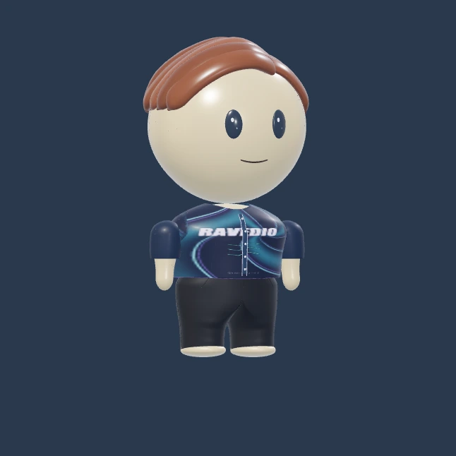
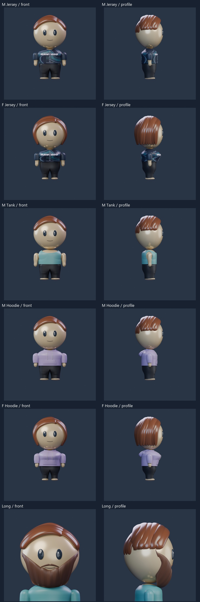
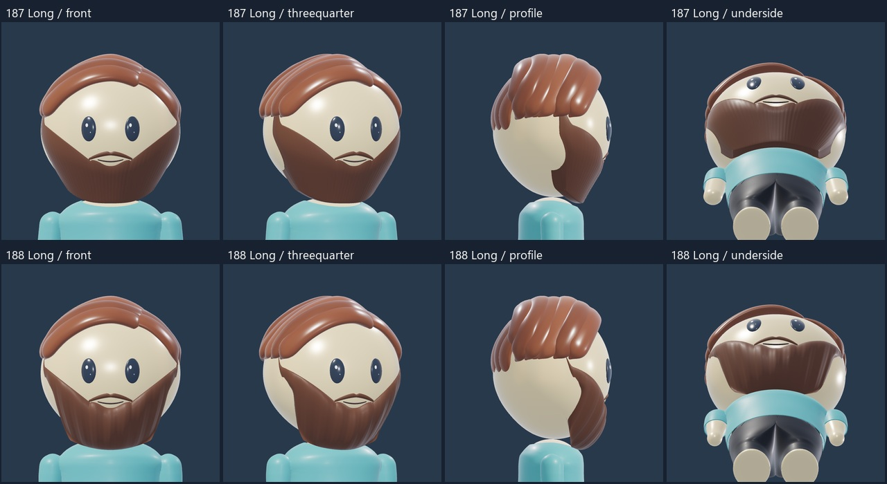
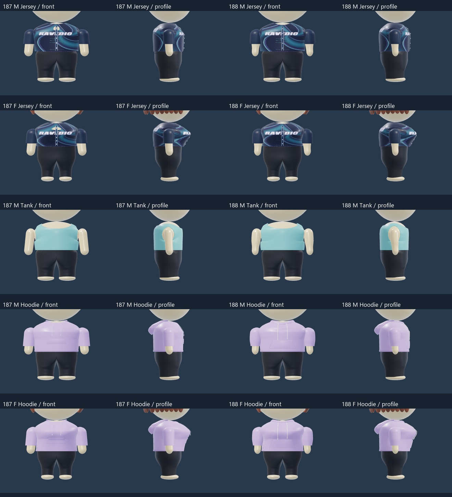
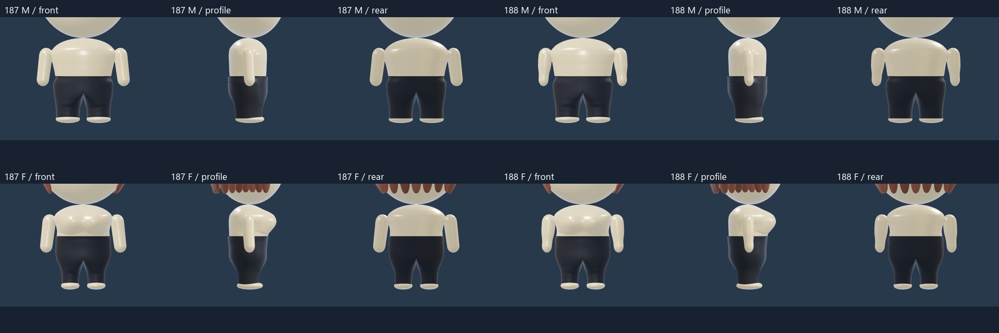
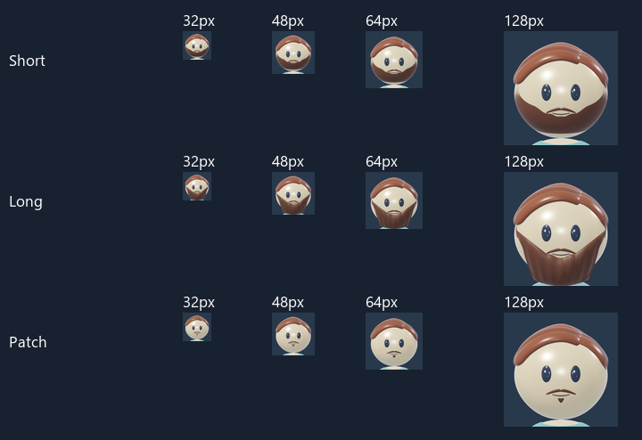

GROOMING AND GARMENT DETAILS -188
Softer shapes and cleaner fits
A fuller Long beard with sculpted growth channels and a rounded underside. Full beard is removed from this candidate. Revised jersey and tank fits, a soft hoodie fold, larger cords and a lower, wider pouch. Both arms have a gradual taper with the same relaxed stance.

Rendered top referenceLoad 3D to mix outfits, rotate and zoom. Each build remembers its selections.
Rotate, zoom and compare with one consistent 3D lighting setup. Rotate and zoom to inspect the beard edges, mouth opening and under-chin fit. The head, eyes, scalp hair, body, palette and fixed 3D lighting are retained. All eight women’s tops and five men’s tops are selectable.
Saved Blender renders

Long beard comparison

Necklines and garment details

Arm shape comparison

Small portraits

Scope and review
Candidate188. Long beard volume, texture and underside; Full retired from active choices. Shallow front drop for both round jersey openings, skin clearance repairs, smooth mens Tank armhole borders. Both Hoodies regain a fabric fold, thicker cords and a larger lower pouch. Arms taper gradually; all13 tops refitted. Heads, eyes, scalp hair, noses, mouths, central bust/torso, pants, palette and lighting retained. Technical checks and self visual review remain separate from owner aesthetic acceptance.